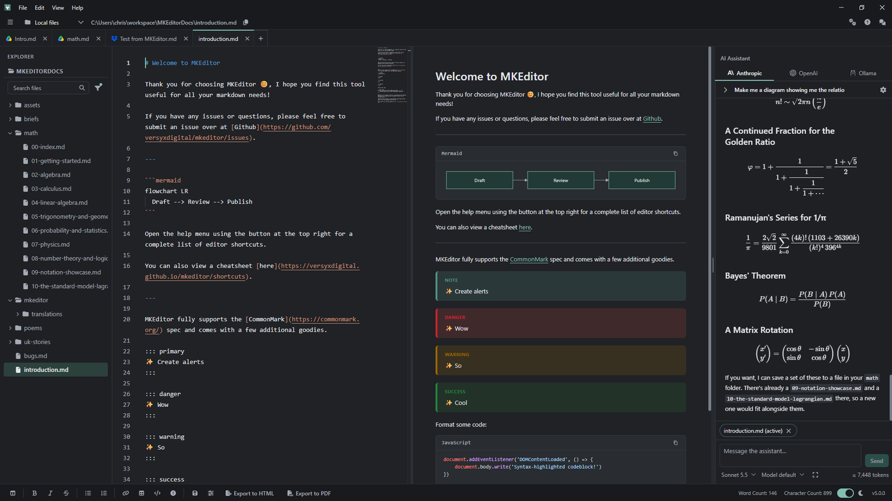
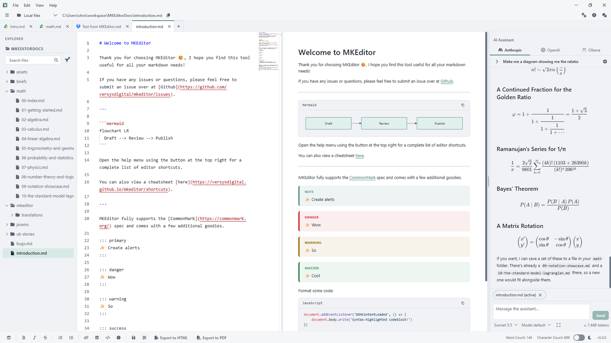
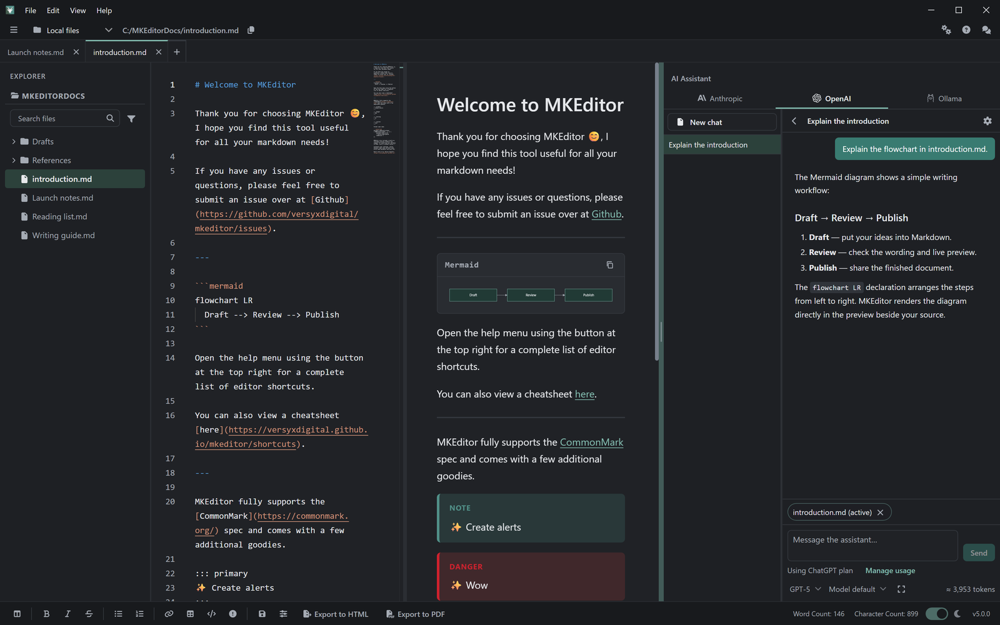
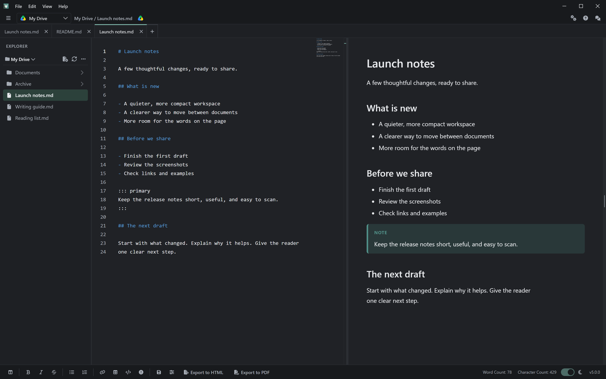
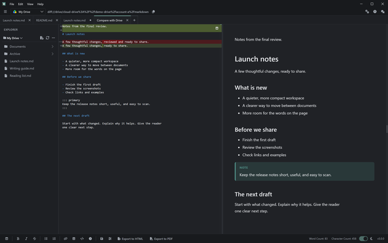
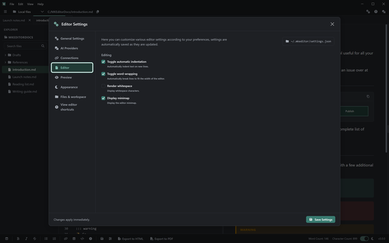
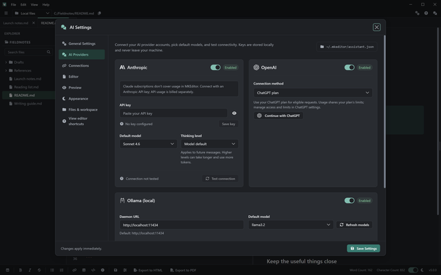
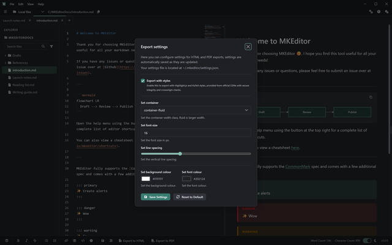
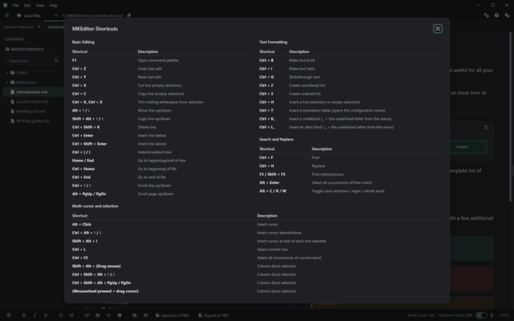

Write and preview together
See the result as you type. Resize the panes, keep scrolling in sync, and choose your preferred preview width.
MKEditor 5.0 Release preview
A clear place for your documents, with live preview, a flexible workspace and AI when you want a hand.
Free & open source. Windows, macOS, Linux & web.

Captured from the v5.0 desktop build. About this preview
Built for writers
Quickly and easily get started writing your markdown documents with MKEditor's rich set of features.
See the result as you type. Resize the panes, keep scrolling in sync, and choose your preferred preview width.
Browse folders, filter files and move between tabs. Restore your local workspace and cursor positions when you return.
CommonMark, tables, highlighted code, alert blocks and LaTeX maths. Export your finished document to HTML or PDF.

MKEditor is powered by Monaco, with multi-cursor editing, find and replace, undo history and keyboard shortcuts.
Available on Desktop
Ask for a second opinion, shape an outline or work through a change without leaving your document.

Share the active document or selection, or mention a file with @. Context controls stay with the conversation.
Workspace writes ask for confirmation by default. Compare proposed edits before they reach your files.
Keep separate conversations for each provider, with saved history and drafts.
OpenAI
Sign in through your browser to use your plan for eligible requests. You can also choose API-key access explicitly.
Plan limits apply. No automatic switch to API billing.
Anthropic
Connect an Anthropic API key and use their frontier models for your work.
Claude subscriptions cannot be used in MKEditor.
Ollama
Connect a local Ollama installation, select an installed model and set its context allocation.
Your own local runtime. No provider API key.
View our privacy policy to learn how AI data is handled.
 Cloud storage Beta
Cloud storage Beta
Move between local folders, Google Drive and Dropbox. Browse your folders, edit Markdown files and save local drafts to the cloud, on desktop or in your browser.


When versions disagree
Compare the cloud version with your local edits when a save conflict arises. Your draft stays intact while you decide what to keep.
Make it yours
Choose your appearance, editor behaviour and preview styling. Keep useful shortcuts close, and export when the document is ready.

Adjust editing, appearance, preview and workspace preferences.

Choose connection methods, models and thinking preferences.

Export to HTML or PDF, with control over document styling.

Find editing, formatting and navigation shortcuts in one place.
Completely 100% free
Install MKEditor on your desktop. Supported for all major operating systems.
Desktop / EXE
Install the desktop app for local workspaces and optional AI.
Download for WindowsPublished release v4.1.0
Desktop / PKG
Use MKEditor as a desktop application on your Mac.
Download for macOSLatest published PKG v3.6.0
Desktop / DEB
A Debian package for supported Linux desktop environments.
Download for LinuxPublished release v4.1.0
Prefer a browser?
Use MKEditor in your browser, with live preview and Google Drive or Dropbox alongside your local files.
Yes. MKEditor is free and open source under the MIT licence. Local editing needs no MKEditor account. Optional AI services may have their own subscription limits or API charges.
Yes, MKEDitor offers ChatGPT sign-in. Eligible requests use your plan and share its limits. API-key access is a separate, explicit choice; MKEditor does not silently fall back to API billing.
Claude subscriptions cannot be used in MKEditor. Anthropic access requires an API key and uses Anthropic’s API billing. You can also connect OpenAI or run a model locally through Ollama.
Choose Google Drive or Dropbox from the toolbar beside the menu. Connect your account to browse and open files, then enable editing to save changes or create files and folders.
Local editing does not upload your documents to a Versyx Digital storage service. Optional cloud and AI connections send information to the service you choose. The assistant has controls for sharing the active document, selection and mentioned files. Read the privacy policy for details.
The browser editor supports Markdown, live preview and connections to Google Drive and Dropbox. Local folder access needs a browser with File System Access support, such as Chrome or Edge. The AI assistant is available in the desktop app.
Open a document. Find a little focus. Enjoy your writing.